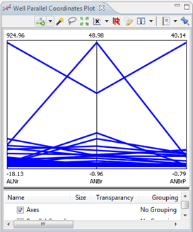

The Parallel Coordinates Plot is a common way of visualizing high-dimensional geometry and analyzing multivariate data. Special for this plot is that you select more than one feature on the x axis.
This plot can be used to see the relation between different wells over a series of features.

To this chart, you can only add more parallel coordinates layers, which serve to the goal as the first one. But you can group them differently or add a different aggregation to them.